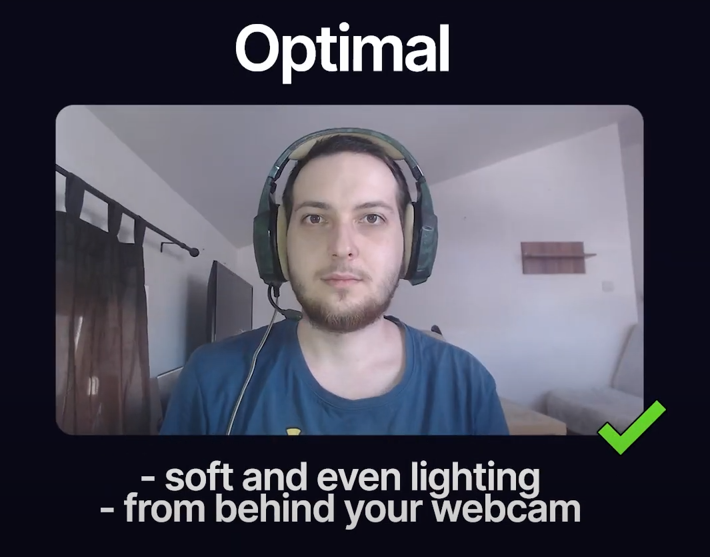
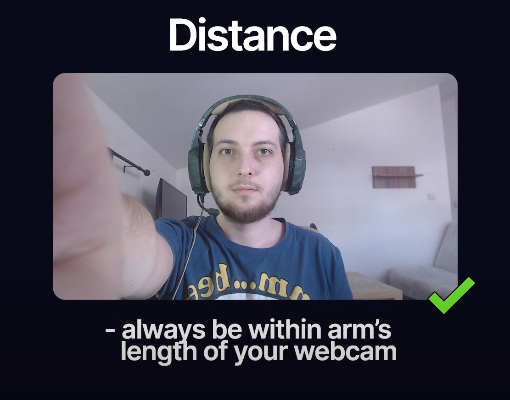

Animaze Desktop: What can I do to get better tracking in Animaze?
Here are some tips and tricks to help you get the best experience out of Animaze’s tracker:
- Light your face from the front.
- Avoid placing the light source behind you or partially illuminating your face.
- Backlighting and partial lighting cast shadows, which are difficult for the Animaze tracker to interpret.

Too much or too little light on your face will over illuminate or under-illuminate it. Both extremes result in an improper light distribution causing the tracker to misinterpret your features.
We recommend that you use the user feed in the top left corner to monitor your lighting.
Frame yourself such that your head covers about 50% of the camera’s feed height.
We also recommend that you use the user feed in the top left corner to monitor your framing. Also, make sure you’re not too far from the camera. A good rule of thumb is to stay at an arm’s length from the camera!

If the tracking gets lost, you have to recalibrate Animaze. The “Calibrate” button on the bottom of the camera feed will pulsate red when the tracker needs recalibration. More on the calibration process is available here.
In Settings > General, you will find Tracking Profile Defaults. This feature has presets for the most common web camera profiles. If you have a web camera capable of recording 60 FPS, start with the High setting. For medium-quality web cameras, start with the Mid setting. For lower-end cameras, bad lighting, or experience a lot of jittering, start with the Low setting. More on the advanced settings on your camera is available here.